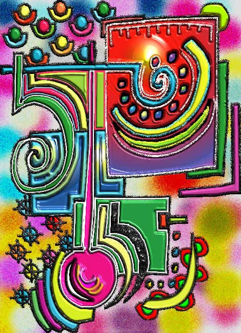

No. 43D
 |


Angelo Di Cicco
nine works
Angelo Di Cicco is based in Abruzzi, Italy. He uses Illustrator, Photoshop and Corel Paint. His images have a child-like boldness of form, line and color. He was born in 1953 and is an anesthesiologist and intensive care physician. "You can understand," he writes, "that my job makes me so close to the death that through my paintings I like to express the love of life...so the colors and the spirals. In a few words, the moving lines are the soul of my life."This exhibit posted November 10, 2002.
No. 43D
 |